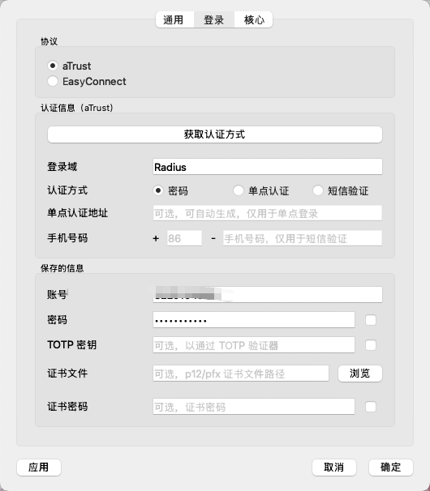
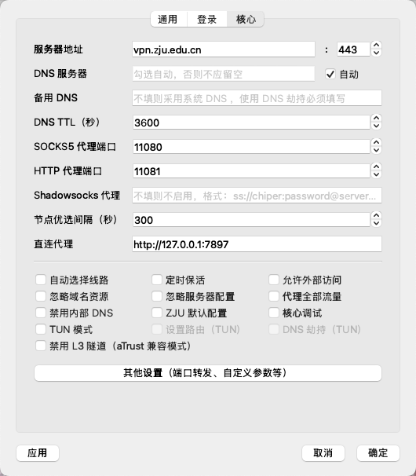
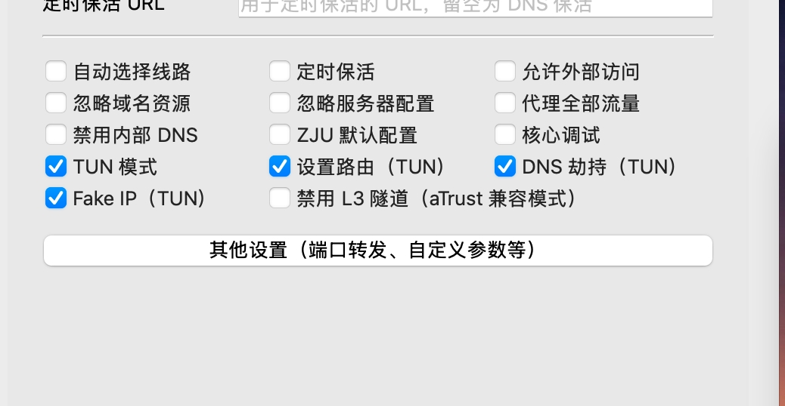

代理
airport
使用自己订阅的机场服务提供商的订阅链接
订阅转换
【编程技术】开箱即用的ZJU-Rule分享 https://www.cc98.org/topic/6167086 复制本链接到浏览器或者打开【CC98】微信小程序查看~
Win/Mac: clash verge rev
Clash Verge - 现代化跨平台代理客户端 | 开源免费支持多协议
对rule支持的比较好
防止gemini不能使用。节点选择-自动选择-台湾/日本节点
ZJU Connect / EZ4Connect
Mac上GUI：GitHub - chenx-dust/EZ4Connect: ZJU-Connect 图形界面 - 支持 aTrust 和 EasyConnect 协议 · GitHub
打开后，mac屏幕左上角选择EZ4Connect-首选项，按照下图配置：


直连代理: 对应访问外网的代理，如clash的地址
如果需要ssh访问校内服务器，有两种方式
- 其他设置-端口转发（如把10.2.3.4转发到127.0.0.1:xxxx)，然后改ssh配置文件(HostName 127.0.0.1, Port xxxx)
- （推荐）开启TUN模式，如下图。断开vpn后重新连接，然后输入sudo密码。这样就可以直接ssh内网地址


Android
2025 最新 Clash Meta For Android 下载，安装使用教程
Ubuntu: clash-for-linux(推荐)
安装和使用
一键安装，只需要输入订阅地址 GitHub - nelvko/clash-for-linux-install: 😼 优雅地使用基于 clash/mihomo 的代理环境
添加订阅
$ clashsub -h
Usage:
clashsub COMMAND [OPTIONS]
Commands:
add <url> 添加订阅
ls 查看订阅
del <id> 删除订阅
use <id> 使用订阅
update [id] 更新订阅
log 订阅日志
subconverter
注意如果使用了订阅转换，要把链接用引号括起来
clashsub add 'https://xxxxxx.com/sub?target=clash&url=https%3A%2F%2Fxxxxxx.no-mad-sub.one%2FlxxxxxPMsF4VHVlC3%3Fclash%3D3%26extend%3D1'
webui界面
$ clashui
╔═══════════════════════════════════════════════╗
║ 😼 Web 控制台 ║
║═══════════════════════════════════════════════║
║ ║
║ 🔓 注意放行端口：9090 ║
║ 🏠 内网：http://192.168.0.1:9090/ui ║
║ 🌏 公网：http://255.255.255.255:9090/ui ║
║ ☁️ 公共：http://board.zash.run.place ║
║ ║
╚═══════════════════════════════════════════════╝
$ clashsecret 666
😼 密钥更新成功，已重启生效
$ clashsecret
😼 当前密钥：666
[Q&A] ui点击提交没反应 · Issue #496 · nelvko/clash-for-linux-install
把显示的端口(因为有冲突，所以不一定是9090，假设显示的是6847) 用ssh端口转发到本地(如果机器没有公网ip)
然后打开localhost:6847/ui ,填写显示的端口6847 (注意可能不是默认的9090)，和clashsecret显示的密码，就可以进入管理界面

让局域网的机器共享代理
比如实验室同一个局域网下很多服务器的情况下，可以在其中一个服务器上配好，
在clash for linux的webui里面，打开允许局域网。记住显示的端口

用这个命令查看clash是否在监听局域网端口。如果是127.0.0.1:这样就说明还没允许局域网，如果*: 就是成功了
ss -tlnp | grep 64567
LISTEN 0 4096 127.0.0.1:64567 0.0.0.0:* users:(("mihomo",pid=3706816,fd=3)) #只监听本机
现在的端口64567是临时端口，说明默认的7890有冲突，可用此命令查看服务器上是否有别人开的代理进程
重新设置端口。不需要重启，实时生效。

- http_proxy：使用 port 指定的值。
- all_proxy：使用 socks-port 指定的值。
- 当 port/socks-port 未指定时，使用 mixed-port。mixed-port在桌面/浏览器确实方便，但是在服务器端非http协议、websocket等场景里会有一些问题。所以建议是使用http端口和socks端口分开配置的方法。参考[Q&A] clashon这条是不是默认写死sockets走7890混合口 配置文件已经给到了sockets7891 但是查看代理信息还是走的7890 没法单独设置吗 · Issue #385 · nelvko/clash-for-linux-install
在远程机器上，在~/.bashrc和~/.zshrc的末尾加上
# 代理配置函数
PROXY_ADDR="http://10.71.100.100:9890" #对应clash运行的机器（示例IP，请替换为实际地址）
SOCKS_ADDR="socks5://10.71.100.100:9891" #对应clash运行的机器（示例IP，请替换为实际地址）
proxyon() {
export http_proxy="$PROXY_ADDR"
export https_proxy="$PROXY_ADDR"
export HTTP_PROXY="$PROXY_ADDR"
export HTTPS_PROXY="$PROXY_ADDR"
export all_proxy="$SOCKS_ADDR"
export ALL_PROXY="$SOCKS_ADDR"
export no_proxy="localhost,127.0.0.1,10.0.0.0/8,172.16.0.0/12,192.168.0.0/16"
export NO_PROXY="$no_proxy"
echo -e "\033[32m[✔] Proxy Enabled (${PROXY_ADDR})\033[0m"
}
proxyoff() {
unset http_proxy https_proxy HTTP_PROXY HTTPS_PROXY all_proxy ALL_PROXY no_proxy NO_PROXY
echo -e "\033[31m[✘] Proxy Disabled\033[0m"
}
proxyon #可选，决定代理是否默认开启
然后重启终端即可
注：根据实际的服务器配置，更新 IP 地址和端口号
卸载
Ubuntu: v2rayA (bug较多不推荐)
服务器环境: Ubuntu 24.04 LTS (服务器版本，无桌面环境)
代理软件:
- V2Ray-core (核心)
- v2rayA (Web GUI 管理器)
1 安装 V2Ray-core
v2rayA 需要一个 V2Ray 或 Xray 核心作为后端。建议用 V2Ray-core
下载 V2Ray-core 最新版本：
访问 V2Ray 的 GitHub Releases 页面 (https://github.com/v2fly/v2ray-core/releases)，找到最新的稳定版本。
找到类似 v2ray-linux-64.zip 的文件（适用于 AMD64/x86_64 架构）。
在服务器上执行以下命令下载（请替换为最新的版本号）(如果无法连接github, 本地下载后scp传上去)
cd /tmp
wget https://github.com/v2fly/v2ray-core/releases/download/v5.32.0/v2ray-linux-64.zip # 示例版本号，请替换为最新
解压 V2Ray-core：
安装 V2Ray 可执行文件：
将 v2ray 主程序移动到系统路径，并赋予执行权限。
安装 V2Ray 核心资产文件 (geoip.dat 和 geosite.dat)：
这些文件包含了 IP 地址和域名到地理位置的映射信息，V2Ray 用于路由规则。
sudo mkdir -p /usr/local/share/v2ray/ # 创建 V2Ray 资产目录
sudo mv /tmp/v2ray_temp/geoip.dat /usr/local/share/v2ray/
sudo mv /tmp/v2ray_temp/geosite.dat /usr/local/share/v2ray/
sudo chmod 644 /usr/local/share/v2ray/geoip.dat
sudo chmod 644 /usr/local/share/v2ray/geosite.dat
注意： 如果你下载的 V2Ray 包不包含
geoip.dat和geosite.dat，或者文件损坏，你需要从 Loyalsoldier/v2ray-rules-dat (https://github.com/Loyalsoldier/v2ray-rules-dat/releases) 手动下载最新版：
sudo wget -O /usr/local/share/v2ray/geoip.dat https://github.com/Loyalsoldier/v2ray-rules-dat/releases/latest/download/geoip.dat
sudo wget -O /usr/local/share/v2ray/geosite.dat https://github.com/Loyalsoldier/v2ray-rules-dat/releases/latest/download/geosite.dat
2 安装 v2rayA
v2rayA 提供了 Web GUI，方便管理 V2Ray-core。
下载 v2rayA .deb 包：
访问 v2rayA 的 GitHub Releases 页面 (https://github.com/v2rayA/v2rayA/releases)。
找到并下载最新的适用于 debian_x64 的 .deb 文件。
在服务器上执行以下命令下载（请替换为最新的版本号）：
cd /tmp
wget https://github.com/v2rayA/v2rayA/releases/download/v2.2.6.7/installer_debian_x64_2.2.6.7.deb # 示例版本号，请替换为最新
安装 v2rayA：
3 管理 v2rayA 服务
v2rayA 安装后会自动注册为 systemd 服务。
启动 v2rayA 服务：
设置 v2rayA 开机自启动：
重启 v2rayA 服务：
在修改配置后常用。
停止 v2rayA 服务：
查询 v2rayA 服务状态：
查看服务是否正在运行以及最近的日志。
实时查看 v2rayA 日志：
用于故障排除。
4 配置 v2rayA (通过转发Web UI端口:2017)
v2rayA 的 Web UI 默认监听在 127.0.0.1:2017。由于服务器没有 GUI，需要通过 SSH 端口转发访问，或者在vscode里面添加端口。
-
在你的本地电脑上打开终端 (不是服务器上)。
-
执行 SSH 端口转发命令：
保持此 SSH 会话开启。
-
在你的本地电脑上打开浏览器。
-
在地址栏输入： http://127.0.0.1:2017
-
首次访问，设置管理员用户名和密码。 请务必设置强密码。
-
导入订阅链接：
登录后，导航到左侧菜单的 “订阅” 或 “Profiles”。
点击 “添加订阅”，粘贴你的 V2Ray/Clash/Shadowsocks 订阅链接。
点击 “更新” 或 “确定”，v2rayA 将自动获取并显示节点。
- 选择并激活节点：
在节点列表中选择一个节点，点击 “激活” 按钮。
(尽量选协议为tls的)
- 启用透明代理
透明代理可以不用设置ALL_PROXY等环境变量

failed to listen TCP on [::1]:20170: bind: cannot assign requested address
原因： V2Ray 尝试在 IPv6 地址 ::1 上监听端口，但服务器的 IPv6 已禁用或配置不正确。
解决方法：
检查IPV6是否开启
如果输出 1, 需要启用IPv6，执行下面的命令:
Warning
```
sudo sysctl -w net.ipv6.conf.all.disable_ipv6=0
``` 永久启用的方法需要修改 /etc/sysctl.conf
参考issue:
- failed to start v2ray-core: unexpected exiting: check the log for more information**** · v2rayA/v2rayA · Discussion #1466 · GitHub
- Failed to connect to proxy if IPv6 disabled · v2rayA/v2rayA · Discussion #1604 · GitHub
5 验证代理是否工作
在服务器命令行中验证代理是否生效。
故障排除
1 永久启用 IPv6
1. 检查 sysctl 配置：
确保以下行被注释掉或设置为 0：
# net.ipv6.conf.all.disable_ipv6 = 1
# net.ipv6.conf.default.disable_ipv6 = 1
# net.ipv6.conf.lo.disable_ipv6 = 1
应用更改：sudo sysctl -p
- 配置 Netplan：
编辑 /etc/netplan/ 下的网络配置文件（如 00-installer-config.yaml）。
找到你的网络接口（如 eth0 或 ens18），添加或修改 IPv6 配置。
DHCPv6 (自动获取)：
Static IPv6 (静态配置)：
network:
ethernets:
your_interface_name:
dh4: true
addresses: ["YOUR_IPV6_ADDRESS/YOUR_PREFIX_LENGTH"]
routes:
- to: default
via: "YOUR_IPV6_GATEWAY"
nameservers:
addresses: [2001:4860:4860::8888] # 示例 IPv6 DNS
version: 2
保存并应用 Netplan 配置：
3. 验证 IPv6：
确认能获取 IPv6 地址并能正常 Ping 通。
4. 调整 v2rayA 配置 (可选)： 如果 IPv6 已启用，你可以回到 v2rayA 的 config.json，将之前禁用的那些 listen: "::1" 的 inbounds 重新设置为 "enabled": true，或者将它们的 listen 改为 "0.0.0.0"，让它们同时监听 IPv4 和 IPv6。
2. failed to connect: geoip.dat or geosite.dat file does not exists
原因： V2Ray 核心找不到地理位置数据库文件。
解决： 确保 geoip.dat 和 geosite.dat 已经下载并放置到 /usr/local/share/v2ray/ 目录，并有正确的读取权限。参考本文档 第二步：安装 V2Ray-core 中的相关说明。
3. curl: (35) error:0A000126:SSL routines::unexpected eof while reading 或 No data received
原因： 代理未正确生效，或者代理对 SSL/TLS 流量处理有问题。
Tip
选择 有tls 传输协议为ws(websocket) 的节点
解决：
检查系统代理设置： 确保你已经通过 v2rayA Web UI 或手动环境变量设置了系统代理，并且它们指向 127.0.0.1:2017 (或你实际的 v2rayA 代理端口)。
如果为空或错误，请设置：
export http_proxy="http://127.0.0.1:2017"
export https_proxy="http://127.0.0.1:2017"
export all_proxy="socks5://127.0.0.1:2017" # 尝试使用 SOCKS5
检查 v2rayA Web UI 中的 Outbounds 配置： 确保你的订阅节点已激活且正常工作。尝试切换到另一个节点看是否解决。
检查 v2rayA 服务日志： sudo journalctl -u v2raya -f。观察是否有关于连接远程代理服务器（你的 VLESS/Trojan/VMess 地址）的错误信息，例如 TLS 握手失败、连接超时等。这可能意味着你的代理服务器本身有问题，或者你的服务器到代理服务器的连接被阻断。